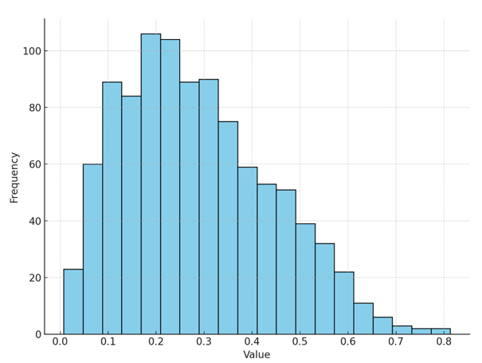
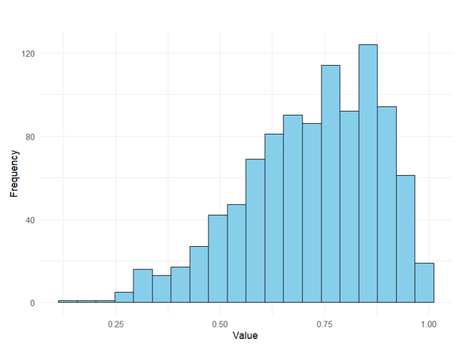
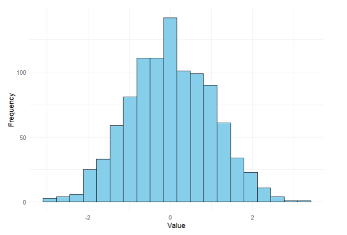
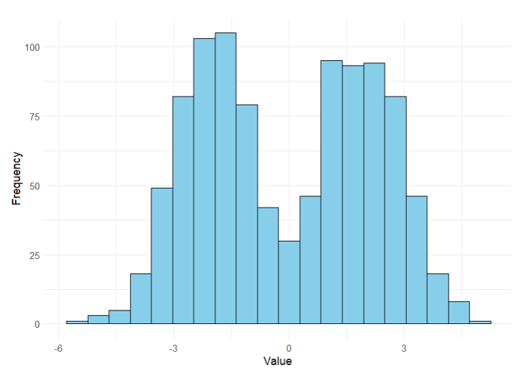

Definition 4.1
The distribution of a variable refers to which values a variable can take and how often (frequency) it takes on those values.
One way to investigate the distribution of the data is using a frequency table.
Definition 4.2
A frequency table shows the ranges of values of a variable and how many observations fall within those ranges.
Example 4.1
Create a frequency table and display the results for age in the CS dataset.
Example 4.2
Create a frequency table and display the results for income in the CS dataset.
Example 4.3
Create a frequency table and display the results for failure time in the failure time dataset.
Example 4.4
Create a frequency table and display the results for engine temperature in the failure time dataset.
Two key features to describe a distribution visually are its skew and modality.
Definition 4.3
Skew is a measure of the asymmetry of a distribution.
The mean is more affected by skew than the median. In general, the mean will be pulled in the direction of the skew.
You can use the relative position of the mean and median to obtain insights into whether the data are skewed:
Example 4.5
Compute the mean and median for income and SAT score. What do these potentially say about the skew of these distributions?
Example 4.6
Compute the mean and median for failure time and shaft diameter. What do these potentially say about the skew of these distributions?
When data are symmetric, it is common to use the mean and variance/standard deviation as measures of central tendency and variability, respectively.
When data are skewed, the median and five-number summary give more informative descriptions of the central tendency and variability (spread) of the data, respectively.
Example 4.7
Consider the visualization below. How would you describe the skew of this distribution? What is the relationship between the mean and the median in these data?

This distribution is right-skewed. The mean of the data will be pulled in the direction of the skew, meaning the mean will be greater than the median.
Example 4.8
Consider the visualization below. How would you describe the skew of this distribution? What is the relationship between the mean and the median in these data?

This distribution is YOUR ANSWER. Why?
Definition 4.4
Modality refers to the number of peaks of a distribution.
When the data are multimodal, single measures of centrality and variability will be misleading.
Example 4.9
Consider the visualization below. Select the option that correctly describes the modality of the distribution.

This is a unimodal distribution (one peak).
Example 4.10
Consider the visualization below. Select the option that correctly describes the modality of the distribution.

This is a YOUR ANSWER. Why?
Definition 4.5
A pie chart is a type of graph in which a circle is divided into sectors that each represent a proportion of the whole.
These can be used to visualize qualitative data of any size.
Example 4.11
Use a pie chart to create a visualization for ethnicity in the CS dataset.
ethnic_table <- table(Ethnicity)
ethnic_data <- data.frame(Ethnicity = names(ethnic_table), Count = as.numeric(ethnic_table))
ggplot(ethnic_data, aes(x = "", y = Count, fill = Ethnicity)) +
geom_bar(stat = "identity", width = 1) +
coord_polar("y") +
labs(title = "Pie Chart of Ethnicity") +
theme_void()Example 4.12
Use a pie chart to create a visualization of lubricant in the failure time dataset.
Definition 4.5
A bar chart can also be used to visualize qualitative data. It shows the count or proportion of observations in each category as a bar.
These can be used to visualize qualitative data of any size.
Example 4.13
Use a bar chart to create a visualization for ethnicity in the CS dataset.
ethnic_table <- table(Ethnicity)
ethnic_data <- data.frame(Ethnicity = names(ethnic_table), Count = as.numeric(ethnic_table))
ethnic_data$Ethnicity <- ordered(ethnic_data$Ethnicity, levels = c("White", "Asian", "Hispanic/Latino", "Other", "African American/Black", "American Indian/Alaska Native"))
ggplot(ethnic_data, aes(x = Ethnicity, y = Count)) +
geom_bar(stat = "identity") +
labs(title = "Bar Chart of Ethnicity", x = "Ethnicity", y = "Count") +
theme_minimal() +
scale_x_discrete(labels = c("AA/Black", "AI/AN", "Asian", "Hisp/Lat", "Other", "White"))Example 4.13
Use a bar chart to create a visualization of material in the failure time dataset.
Definition 4.6
Histograms are useful for quantitative data when you wish to view the overall shape of the data for a large number of observations and you do not wish to identify specific parts of the distribution or outliers.
Example 4.14
Create a histogram to visualize income in the CS dataset.
Example 4.15
Create a histogram to visualize shaft diameter in the failure time dataset.
Definition 4.7
Finally, box plots are another way to visualize quantitative data that specifically shows different parts of the five-number summary (as well as outliers)
Example 4.16
Create a box plot for income using the CS dataset.
Example 4.17
Create a box plot for failure time in the failure time dataset.
Example 4.18
Use the following description to identify the visualization:
This visualization is used to visualize the distribution of quantitative data when seeing individual outliers as points isn’t needed.
This best describes a histogram. Histograms are especially useful for visualizing data distributions for large datasets without seeing individual data points or outliers.
Example 4.19
Use the following description to identify the visualization:
This visualization uses bars to represent categorical data, where the length of each bar corresponds to the count or percentage of observations in each category.
This best describes a bar chart. Bar charts are used for categorical data where each category has its own bar showing the count or proportion of observations in that category.
Example 4.20
Use the following description to identify the visualization:
This visualization works well with small and large datasets, and is designed specifically to visualize the five-number summary including outliers.
This best describes a YOUR ANSWER. Why?
Example 4.21
A company has surveyed its employees about their department, and the results are as follows: Sales (45), Marketing (30), HR (15), and IT (25). The data is categorical, and you want to compare the frequency of each department.
Which visualization would best display this data?
Using a YOUR ANSWER would work best for these data. Why?
Example 4.22
You have a large dataset containing monthly household energy consumption (in kWh) for 10,000 households. You would like to visualize the overall shape of the distribution and are not concerned with seeing specific observations, values, or identifying outliers.
Which visualization would best display this data?
Using a YOUR ANSWER would work best for these data. Why?